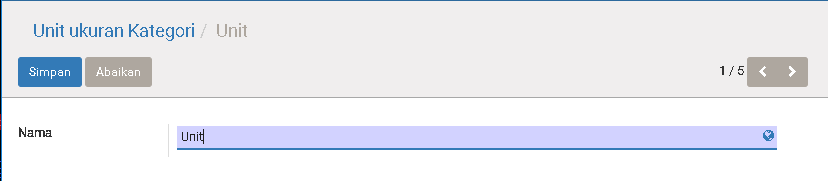

Unit of Measure
Introduction
Unit of Measure atau UOM atau Satuan Unit sangat penting di dalam bidang kita, karena dia akan muncul di mana-mana. Contohnya: Di penjualan, Pembelian, Inventory, Stock, dll.
Apa yang buat di penting lagi?
Coba baca kasus di bawah ini:
PT. ABC membeli Salmon dari PT. GHZ dengan kuantitas besar yaitu hitungan nya
per Ton. Tetapi PT. ABC dalam bidang distribusi dan menjual Salmon dalam
quantity kecil ke consumer bisa sampai ke Gram. Tetapi, waktu stock opnum, PT.
ABC memakai Kg sebagai satuan pembukuan.
Jadi, PT. ABC perlu minimun 3 Satuan unit (Ton, Kg, Gram) untuk membantu proses bisnis mereka.
- Membuat pembelian, Memakai
Ton - Membuat penjualan, memakai
KgatauGram - Pembukuan inventory memakai
Kg
Biarpun bermacam-macam Satuan unit, di bantu oleh Unit Ukuran Kategori, kita bisa meng-group satuan-satuan unit. Dan biar bagaimanapun, waktu kita membaca pembukuan inventory atau akuntin, cuma satu Satuan Unit yang akan di keluarkan. System akan automasi perhitungan segalanya, sesuai setting-an yang ada.
Menu
Persediaan > Konfigurasi > Satuan Unit

Satuan Unit

| Field | Required | Description | Default |
|---|---|---|---|
| Satuan Ukuran | Yes | Nama untuk satuan ukuran ini | - |
| Kategori | Yes | Ini untuk meng-group satuan unit Detail bisa liat di SINI |
- |
| Aktif | Yes | Menentukan apakah satuan unit ini masih aktif | Yes |
| Ketepatan Pembulanan | Yes | Menentukan cara pembulatan. Contoh: Ketepatan Pembulatan: 0,001 Quantitas aktual: 8.97294 Quantitas setelah di bulatkan adalah: 8.973 |
0,001 |
| Tipe | Yes | Satuan Dasar untuk kategori iniSebagai dasar dari Satuan Unit yang kategori sama. Nilainya akan selalu 1 |
Satuan Dasar Untuk Kategori Ini |
Lebih Besar Satuan ReferensiNilai nya lebih besar dari pada Satuan dasar |
|||
Lebih Kecil Satuan ReferensiNilai nya lebih Kecil dari pada Satuan dasar |
|||
| Ratio | Yes | Field ini akan muncul bila Tipe adalah Lebih Besar Satuan Referensi atau Lebih Kecil Satuan Referensi |
1,000 |
Contoh
Case 1: Berat
1 Ton = 1,000 Kg 1 Kg = 1,000 gram dengan data atas contoh sebagai berikut:
- Kita buatkan Unit Ukuran Kategori untuk meng-group satuan unit yang akan di buat.
Kita namakan dia Berat. - Buatkan Satuan Unit dengan data yang di bawah:
Satuan Ukuran: Kg
Kategori: Berat
Tipe: Satuan Dasar untuk Kategori ini - Buatkan Satuan Unit dengan data yang di bawah:
Satuan Ukuran: Ton
Kategori: Berat
Tipe: Lebih Besar Satuan Refensi
Ratio: 1000 - Buatkan Satuan Unit dengan data yang di bawah:
Satuan Ukuran: Gram
Kategori: Berat
Tipe: Lebih Kecil Satuan Refensi
Ratio: 1000
Case 2:
a) Produk US Choice Short Rib kita beli dengan satuan unit Loaf. 1 Loaf nya adalah 3 Kg.
b) Produk Beef Short Plate kita beli dengan satuan unit Loaf. 1 Loaf nya adalah 4 Kg.
Dengan kasus di atas kita bisa buatkan begitu:
- Untuk (a), Buatkan Satuan Unit dengan data yang di bawah:
Satuan Ukuran: Loaf(3kg)
Kategori: Berat
Tipe: Lebih Besar Satuan Refensi
Ratio: 3 - Untuk (b), Buatkan Satuan Unit dengan data yang di bawah:
Satuan Ukuran: Loaf(4kg)
Kategori: Berat
Tipe: Lebih Besar Satuan Refensi
Ratio: 4
Unit Ukuran Kategori

| Field | Required | Description | Default |
|---|---|---|---|
| Nama | Yes | Nama untuk kategori ini | - |